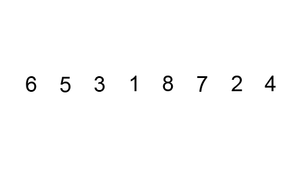
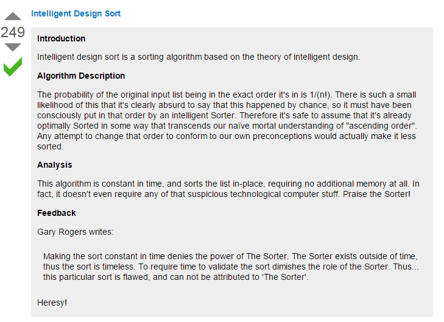

Bubble sort compares each adjacent pair of items, swaps them if they are not in the correct order, then returns to the first item and begins the process over again until all elements to be sorted are in ascending order. Bubble sort is one of the more efficient methods if the list is already almost sorted but has a few items out of place, however, it is too slow for practical use in just about any other instance.
Merge sort works by splitting the list into n sublists and merges them to create new ordered sublists until there is one remaining ordered list. Merge sort, of the three algorithms mentioned in this post, is the most efficient, though quick sort is a close second in most instances.

Quick sort selects an element from the list to be sorted and uses that element as a 'pivot.' The algorithm them re orders the list so that any item smaller than the pivot is moved to the left of it and any element larger than the pivot is moved to the right, effectively creating two sub-lists. This process is then applied to both sub-lists and continues until the elements in the list are sorted in ascending order.
Below is a gif that shows the method and performance of some of the more common sorting algorithms in different instances.

While reserching this topic I also found some information about what is undeniably the most efficient sorting algorithm. Stack overflow user 'BioGeek' does a beautiful job of describing how it works:
 |
 |
 |
 |
 |